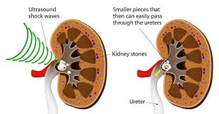

Chapter 6: Waves and Sounds
Physics - Year 10
Naypyitaw International School of Acumen

- Oscillations refer to back and forth motion.
- In an oscillation the motion is repetitive, i.e. periodic, and the body moves back and forth around an equilibrium position.
What is a wave?
- A wave is a periodic disturbance that transfers energy from one place to another.
- It does not transfer matter during the energy transfer.
- A mechanical wave is a wave that is an oscillation of matter and transfers energy through a physical material.

Transverse and Longitudinal Waves
- A Transverse wave is a wave that oscillates perpendicularly to the direction in which the wave travels.
- A Longitudinal wave is a wave that oscillates parallel to the direction in which the wave travels.

- An underground disturbance can produce seismic waves that travel through the earth. If they get big enough, they are known as earthquakes.
- Seismic waves are of two types: primary-waves (longitudinal) and secondary-waves (transverse).
- Because longitudnal waves travel faster than transverse waves, earthquake detectors try to detect the longitudinal p-waves as a warning that a more destructive s-wave is on its way.

- A displacement–distance graph describes the displacements of all particles at a particular point in time.
- You cannot tell whether a wave is transverse or longitudinal by looking at displacement–distance graphs. The graphs look the same for both.
- The amplitude $A$ of a wave is the maximum displacement of a point from its rest position. Its SI unit is the metre $m$.
- The wavelength $\lambda$ of a wave is the distance between any two consecutive points in phase. Its SI unit is the metre $m$.

Three distances that can be used to find the wavelength $\lambda$. Normally we use:
- The distance between any two consecutive peaks.
- The distance between any two consecutive troughs.

- A displacement–time graph describes the displacement of one particle over a time interval.
- The period $T$ of a wave is the time taken to produce one complete wave. Its SI unit is the second $s$.
- The frequency $f$ of a wave is the number of complete waves produced per second. Its SI unit is the Hertz $\;\text{Hz}$.
We can relate frequency to period by the equation $f = \displaystyle \frac{1}{T}$

Wave speed $v$ is the distance travelled by a wave per second. Its SI unit is the metre per second (m/s).
$$\text{wave speed} \;\;v = f \lambda = \frac{\lambda}{T}$$

- A ripple tank is an experimental setup used to investigate the properties of waves.
- A wavefront is an imaginary line on a wave that joins all adjacent points that are in phase.
Properties of Waves
Superposition

Ripple Tank showing superposition, constructive and destructive interference
Superposition refers to the principle that when two or more waves overlap at a point, the resulting disturbance at that point is the sum of the individual disturbances each wave would produce on its own. This means the waves effectively "add up" when they intersect. This property applies to various types of waves like water waves, sound waves, and light waves.

Constructive interference occurs when two waves overlap and combine to create a larger wave with a greater amplitude, while destructive interference happens when two waves overlap and cancel each other out.
Properties of Waves
Reflection


Reflection of Straight Waves from Straight Barriers
Wave reflection is the phenomenon where a wave changes direction and bounces back when it encounters a boundary between two mediums. The wave hits a barrier and returns in the opposite direction
Properties of Reflection
- The angle of incidence is equal to the angle of reflection
- The reflected and incident rays lie on the same plane
- The reflected wave has the same frequency and same wavelength as the incident wave.
- The reflected wave may have a lower amplitude than the incident wave if energy is absorbed by the boundary.
Properties of Waves
Refraction

Direct Refraction and Angled Refraction
Wave refraction is the bending of a wave as it passes from one medium to another. It occurs when waves change speed or enter a medium with a different density

Properties of Refraction
- Waves change direction when they pass from one medium to another.
- Waves change wavelength when they pass from one medium to another.
- The frequency remains the same.
- Waves change speed when they pass from one medium to another.
Properties of Waves
Diffraction


Diffraction in waves refers to the phenomenon where waves bend or spread out as they pass through an opening or around an obstacle, effectively causing them to deviate from their straight-line propagation path
Properties of Waves
Diffraction


Diffraction also happens through large openings
Properties of Diffraction
- As size of the opening increases relative to the wavelength, the curvature at the ends of the wavefronts becomes smaller.
- When the size of the opening is similar to the wavelength, the waves spread out more.
- When the size of the opening is very big compared to the wavelenght, the waves spread out less. The wavefronts are mostly unchanged and only affected at the ends.


- Diffraction can also happen around an obstacle, or over an edge.
- When we consider diffraction over an edge, the longer the wavelength compared to the size of the edge, the greater the curvature effect.
- Sound is produced by vibrating sources placed in a medium. The medium is usually air, but it can be any gas, liquid or solid.
- In a sound wave, the air molecules move repeatedly closer together and then further apart in the direction of travel of the wave.
The speaker has a cone which is made to vibrate in and out by an electric current. When the cone moves out, the air in front is compressed; when it moves in, the air is rarefied (becomes ‘thinner’). The wave progresses through the air but the air as a whole does not move. The air particles (molecules) vibrate backwards and forwards a little as the wave passes. When the wave enters your ear the compressions and rarefactions cause small, rapid pressure changes on the eardrum and you experience the sensation of sound.
- Sound is a longitudinal wave, the direction of vibration of air molecules is parallel to the direction in which the wave travels.
- Like all longitudinal waves, sound waves propagate as a series of compressions (C) and rarefactions (R).
- Compressions are regions where air pressure is higher than the surrounding air pressure.
- Rarefactions are regions where air pressure is lower than the surrounding air pressure.

Unlike electromagnetic waves, a medium is needed to transmit sound waves.
- The human ear is only capable of detecting sounds in a certain range of frequencies.
- Humans hear only sounds with frequencies from about $20\; Hz$ to $20000\; Hz$. These are the limits of audibility.
- The range of frequencies in which a person can hear is known as the range of audibility.

- Any medium which contains particles that can vibrate will transmit sound. However, the speed of sound in different materials might differ.
- $\text{speed in gas}< \text{speed in liquid} < \text{speed in solid}$
- This is because the molecules in a solid are closer together than in a liquid and those in a liquid are closer together than in a gas.
- The speed of sound in air is approximately $330–350 \;m/s$.
- In air the speed increases with temperature and at high altitudes
- Changes of atmospheric pressure do not affect it.
Direct Method to measure the speed of sound
The speed of sound in air can be found directly by measuring the time $t$ taken for a sound to travel past two microphones separated by a distance $d$.
This method can also be used to find the speed of sound in different materials. For example, placing a metal bar between the microphones would allow the speed of sound in the metal to be determined.
Echo Method to measure the speed of sound
Measuring the speed of sound with an echo
An estimate of the speed of sound in air can be made directly if you stand about 100 metres from a high wall or building and clap your hands. Echoes are produced. When the clapping rate is such that each clap coincides with the echo of the previous one, the sound has travelled to the wall and back in the time between two claps, call this one interval. By timing 30 intervals with a stopwatch, the time $t$ for one interval can be found. Also, knowing the distance d to the wall, a rough value of the speed of sound is obtained.
- A note becomes louder when more sound energy enters our ears per second.
- Loudness is related to the amplitude of a sound wave — the larger the amplitude, the louder the sound.

Pitch is related to the frequency of a sound wave — the higher the frequency, the higher the pitch.

Sound Waves on the Cathode Ray Oscilloscope
- A Cathode Ray Oscilloscope (CRO) is an instrument used to visualize sound as a wave graph.
- The waveform on the oscilloscope can be frozen and used to find the frequency and amplitude of the wave
- Ultrasound is sound with a frequency higher than $20 \;kHz$.
- In other words, ultrasonic frequencies are frequencies above the upper limit of the human range.
- Bats and dolphins use ultrasound in detecting the location of objects using echolocation.
- Ultrasound waves are produced by a piezoelectric quartz crystal which is made to vibrate electrically at the required frequency.
- An ultrasound receiver also consists of a quartz crystal which converts vibrations by ultrasound waves into an electrical signal.
Applications of Ultrasound
Ultrasonic Detection of Defects


This is a non-destructive testing method that uses ultrasonic sound waves to identify flaws within a material like concrete or sheet metal by analyzing the reflections of the waves when they encounter a defect.
Applications of Ultrasound
Ultrasonography
Ultrasound waves can be used to obtain images of structures in the body in a process similar to echolocation. It is commonly used to examine the development of foetuses because it is less hazardous than X-rays.
Applications of Ultrasound
Ultrasonic Cleaning
Ultrasonic waves of high amplitude can also be used to clean complicated parts of machinery. The ultrasound agitates the cleaning fluid so it can enter every crevice and carry away dirt.
Applications of Ultrasound
Lithotripsy
Lithotripsy is a non-invasive procedure that uses shock waves to break up kidney stones and other hardened masses using ultrasonic waves. This lets the smaller broken up pieces be flushed out easily
Applications of Ultrasound
Sonar
Sonar is a technique that uses sound waves to detect and identify objects in water. Sonar sends out ultrasonic sound waves into the water and measures the time it takes for the sound waves to reflect back to calculate the distance to the object.